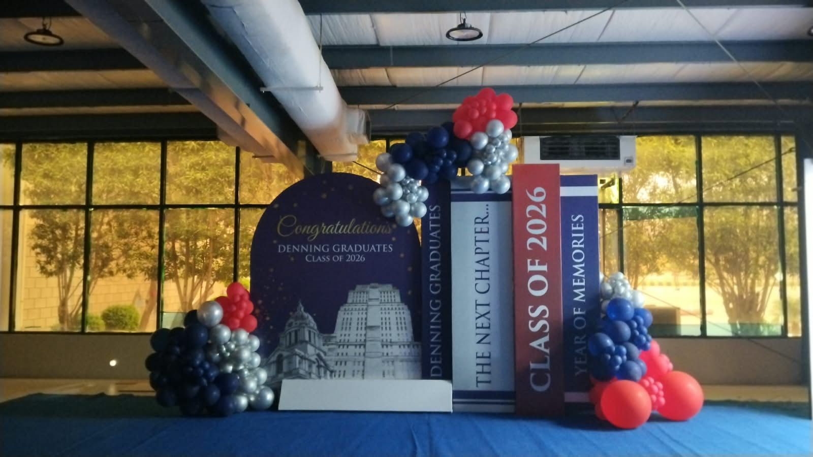

Project Update — Event Displays & Stands
Denning 5th Graduation Ceremony 2026 at Expo Centre Karachi — Our Event Display & Stand Setup
Published 31 August 2026 · Event held 30 August 2026 · Expo Centre Karachi

On 30 August 2026, the Denning 5th Graduation Ceremony — the Class of 2026 convocation for Denning Institute of Technology and Entrepreneurship — was held at Expo Centre Karachi. Booth Design Karachi was engaged to design, fabricate and install the event displays and stands used at the venue for the occasion.
Graduation ceremonies are, in some ways, exhibition projects in disguise. There's a fixed date, a booked hall, a guest list that can't be moved, and a stage that has to be ready before doors open — the same constraints we work within for a trade show stand, just with a very different audience. That overlap is why exhibition stall fabricators are increasingly the right team to call for large institutional events, not just trade fairs.
What the Denning 5th Graduation Ceremony Needed
The Class of 2026 convocation for Denning Institute of Technology and Entrepreneurship needed a physical presence inside Expo Centre Karachi that matched the significance of the occasion for the graduating class — branded backdrops for photographs, a display structure themed around the "Class of 2026" milestone, and a stand that visitors and graduates would naturally gather around through the evening.
Our role was centered on the display and stand side of that requirement: turning the event's branding into physical, freestanding structures that could be designed, built and installed on schedule at the venue.
Our Involvement: Design, Fabrication and Installation
As with our exhibition stall projects, we treated the display and stand work as a single process rather than separate handoffs. The graduation theming — the "Congratulations, Denning Graduates" messaging, the Class of 2026 branding, and the supporting structural elements — was developed into a buildable design, fabricated off-site, then transported and installed at Expo Centre Karachi ahead of the ceremony.
On-site installation at a venue the size of Expo Centre Karachi comes with its own logistics: getting structures into the hall, positioning them within the layout the organizers have set, and finishing the assembly and detailing so everything is presentation-ready before guests arrive. That's the same discipline our team applies to exhibition stall installation work — the difference here was the occasion, not the process.
Why Presentation Matters at Institutional Events
A graduation ceremony is a one-time moment for the people attending it. Unlike a multi-day trade show where a stand gets a second look the next morning, an event display for a convocation has a single evening to do its job — hold up under lighting, photograph well, and read clearly from a distance. There's no rebuild window if a panel doesn't align or a graphic prints slightly off.
That's really the same standard we hold ourselves to on a corporate exhibition stand: the structure has to look intentional, be finished properly, and be strong enough to stand up to a full day — or in this case, evening — of guests moving around and photographing it.
Delivering at Expo Centre Karachi
Expo Centre Karachi is our primary venue focus, and a graduation ceremony hosted there sits within the same move-in and move-out framework as the trade exhibitions we regularly build for. Structures have to be sized and finished to work within the hall, transported and installed inside the window the venue and organizers allow, and cleared afterward without disruption to other bookings. Working within an established venue's operational rhythm — rather than around it — is a large part of what makes an event display project run smoothly. Our Expo Centre Karachi planning guide covers this in more detail for exhibitors preparing their own stands at the venue.
Why Work With an Experienced Fabricator for a Major Event
Institutions planning a convocation, corporate launch or milestone event at a large Karachi venue are usually managing dozens of moving parts already — logistics, guest lists, catering, programme flow. The display and stand element is easy to underestimate until it's the thing that either elevates the room or falls short of it on the day.
Working with a team that already runs exhibition booth design and fabrication as its core discipline means the display side of an event is handled by people used to hard deadlines, fixed venue windows and one-shot installs — the same conditions every exhibition stand is built under. It's a more dependable option than assembling design, fabrication and installation across separate vendors for a one-off event.
Planning a Display or Stand for Your Next Event
If your organization has a convocation, product launch, corporate function or exhibition coming up at Expo Centre Karachi or elsewhere in the city, our team can help with the design and fabrication of the displays and stands the occasion needs — from initial concept through to on-site installation. You can see more of our completed work on the project portfolio, including the full case study for this project.
Related reading
Go deeper on specific topics
Case study
Denning 5th Graduation Ceremony — Full Project
The complete project overview, with both event display photos.
View the project →Service
Exhibition Stall Fabrication in Karachi
Build, installation and dismantling for exhibition stands.
See exhibition stall & booth fabrication →Venue guide
Planning a Booth at Expo Centre Karachi
What to know before designing a stand for this venue.
Read the venue guide →Planning Displays or Stands for an Event in Karachi?
Whether it's a graduation ceremony, corporate function or trade exhibition, we can help design, fabricate and install the stands and displays it needs at Expo Centre Karachi or any other venue in the city.
Call +92-335-2428438 to discuss your event display or stand requirements.